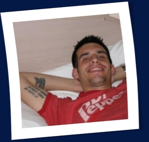

I am an energetic and creative software developer seeking a job
that is as crazy and high-speed as I am.
-
- Experience
-
General DynamicsSr. Software Engineer - April 2008–Present
- Worked on a small team to create a large-scale Configuration Management System (CMDB) using PHP, MySQL, and a lot of Javascript.
- Built over 40 user-friendly interfaces to allow users to interact with the CMDB.
- Wrote and maintained a large-scale database migration script to migrate data from original structure to a new and improved structure.
Morris DigitalWorks Developer - May 2007–April 2008
-
Was lead developer on a project to develop a new search engine using PHP to connect to a FAST database installation to provide
search service for over 15 regional newspapers.
-
Served as assistant database administrator for all MySQL installations within the company, performing tasks such as database
backup and recovery as well as user account creation and role maintenance.
-
Lead developer on an experimental social network for the vertical of travel. This website allowed users to manage and track their
trips and store archived travel journals, images, and video.
U.S. Army Developer - June 2005–June 2007
-
Developed web-based applications using mod_perl and HTML::Mason to interface with both Oracle and MySQL databases.
-
Assisted in the management of roughly 6500 user accounts and helped with the daily maintenance of two Sun servers and RAID arrays.
-
Designed and implemented an application framework named MetAPP that used HTML::Mason to generate application scaffolding.
Developers would then use the application programming interface (API) provided by MetAPP to quickly add business logic and
HTML templates to the project and MetAPP would auto-generate advanced Javascript event handlers to act on their Views.
-
Developed a Content Management System (CMS) for the NSA/CSS Georgia enterprise that over 100 separate webmasters
used to modify and create web pages for 85 unique organizations within NSA/CSS Georgia's Signals Intelligence Directorate.
The CMS was built specifically to handle the strict requirements regarding data classification and access controls for each
individual web page. It also allowed the webmasters to use a variety of pre-built plugins to add dynamically generated content
to their organization's web pages.
-
- Education
-
Lake Central High SchoolSt. John, Indiana - 1999–2002
High School Diploma
- Introduction to C++
- Introduction to Programming with Visual Basic
- Advanced Programming with Visual Basic
Certifications
- ITIL V3 Foundation certification February 2010
- CompTIA Network+
-
- Skills
-
Languages
PHP, perl, Python, Javascript, XHTML, CSS
Libraries
jQuery, Prototype.js, Ext.js, OpenRICO, HTML::Mason
Databases
MySQL, Oracle, Postgres, Sybase, SQL Server, MS Access
Libraries
FreeBSD, NetBSD, OpenBSD, Solaris, Linux, Microsoft Window 2000/2003/XP/Vista/7
-
- Clearance
- Top Secret(TS)/Sensitive Compartmented Information(SCI)
-
- References
-
References from actual people available on request.
Social Network Profiles:
-
- Hobbies
-
Here is a very short list of some of my favorite things to do:
-